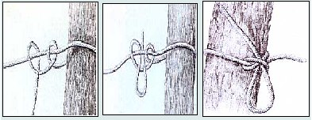
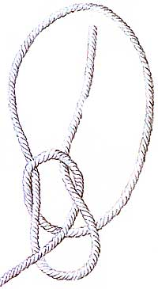
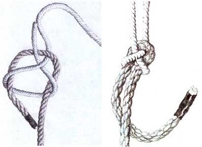

Ties That Bind
June/July 1998
Country Skills
Quick! How fast can you tie a clove hitch?
By Doug Thalacker
ILLUSTRATIONS: HEADLINE TYPE: RODNEY A. OKYNE
A hitch for when the clove hitch can't be tied. It is not as easy to
untie as the clove unless you "slip" it.
The most useful way to make a loop in the
end of a rope. It is better than the more
common loop knot because it is easy to
untie, even when the rope is wet. It also
has a mnemonic for tying it-the rabbit
(end of the rope) comes out of the hole
(overhand loop), runs around the tree
(standing rope), and goes back down the
hole.
This is one of the best ways to secure two pieces of rope together,
particularly if they are of different sizes.
Three times a true-loves knot I tie secure Firm be the knot, firm may his love endure. (Early American lose rhyme)
Have you ever been driving along and wondered how a sofa gets on the side of the road? Have you ever reached your destination only to find that something formerly on the top of your car or trailer is no longer there, and then wondered if someone else is driving down the road wondering how your item got on the side of the road? I imagine that in the days of covered wagons there were...well. you get the picture. We have all been a victim of the Bad Knot Syndrome. It's not that we are careless, it's just that to most people, multiple bends and twists in a rope constitute a knot. We don't give much thought to ropes and knots until we lose something over the side or off the top. Or we get that something to the other end, only to find that we have to use Alexander's solution (keep reading) to get the stuff off-and lose a good rope in the process.
Knots have been with humans as long as ropes have, but, unlike ropes, they have taken on many uses beyond merely securing objects. The peoples of the Andes developed the quipi (Quechua for knot) for doing mathematical calculations and as an accounting method. The abacus of the Arabian cultures is thought to have started as knotted ropes; the Hebrew-Aramaic word abaq means "make a loop or knot." Polynesian people kept genealogies with ropes and knots.
Knots were also used for more mystical purposes. In most cultures, people tied knots to bind up the winds and rain, bind lovers together (the modern wedding band probably evolved from betrothal knots), tie up illnesses, secure fevers, not to mention more malevolent pursuits such as murder and torture. The most famous knot is possibly the Gordian knot. The story goes something like this. Apollo chose Gordius, apparently a farmer, to rule a small kingdom. As an offering, Gordius tied his plow to the temple of Apollo with a knot so cunning that the ends of the rope were hidden. The oracles soon foretold that whoever untied the knot would he the ruler of Asia. The knot baffled everyone who attempted to untie it until Alexander (soon to be the Great) came. He was also stymied, until in a fit of frustration-or genius-he took out his sword and cut the knot in one swift stroke. He went on to role most of the known world.
In today's world-with the invention of such items as the hook-and-eye (Velcro), the zipper, and various designs of nylon straps and ratchets-knots have become less important for securing things. However, working knowledge of some basic knots is still important for those times when modern-day securing devices are unavailable or impractical.
What is the best knot? Well, it depends. The best knot for any situation is one that: (1) holds when it is supposed to; (2) a relatively easy to untie without a knife and; (3) does not bend the rope in such a way that the rope itself a weakened. Fishing is a prime example of the last factor. When a fish breaks off and you're left with a little curlicue at the end, it means the knot weakened the line. Three basic words describe the anatomy of virtually any knot. They also have the virtue of making you sound knowledgeable about knots if the subject happens to come up in cocktail party conversation. They are:
Bight: a bend in a rope.
End: I'll let you guess at this one.
Hitch: a knot used to bind a rope to an object.
 Clove Hitch A fast and easy way to secure a rope to a post, and a knot with almost endless versatility. It works best on round posts but can be made more secure with a hall hitch. It comes loose easily when tension is released on the rope. |
 Two Half Hitches |
 Bowline Knot |
|
 Sheet Bend |
|
|